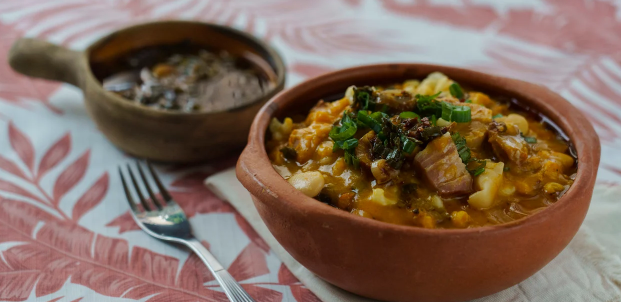

Locro

Description
The Argentinian locro is a dish made out of white corn, beans and squash or pumpkin. It requires a long cooking time which allows using meat like brisket and also allows different versions by varying the ingredients
Ingredients:
- 300 gr of white corn
- 200 gr of white beans
- 150 gr of red chorizo
- 1/2 red chorizo
- 1 onion
- 500 gr of pumpkin
Steps:
Step 1
Soak the beans and white corn 24h before preparing the dish and store it in water inside a fridge.
Step 2
Chop in little cubes all the ingredients.
Step 3
Cook in a cooking pot the white corn, beans, pumpkin and onion with 2Lt of water.
Step 4
Mix with a wooden spoon every 15 minutes.
Step 5
Add meat after an hour of cooking. Mix.
Step 6
Add 2 tablespoons of paprika and 2 tablespoons of ground chilli to half a glass of water and add it to the oil. Mix. Cook 5 more minutes and remove.
Step 7
Fill a deep bowl with Locro and enjoy!.
Return to main page